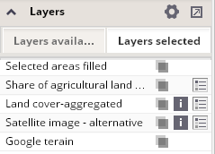

Layers selected for visualization
This panel provides the list of all layers that are currently activated and therefore displayed in the map layout.

This panel enables the user to define opacity, view metadata or display a legend for each layer from the list and also to modify the order of layers.
Thematic maps properties can be changed using the "Configure thematic maps" button located in the upper right corner of this panel.